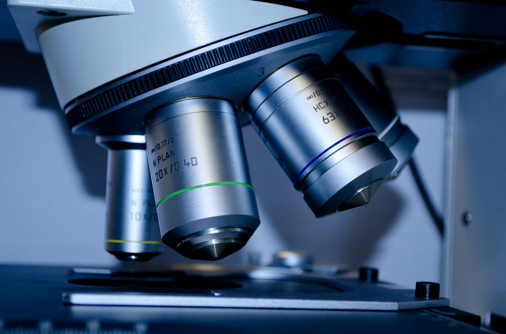

R&D
KCC 중앙연구소
고급 두뇌 인력과 과감한 연구시설 투자로
미래기술 개발에 앞장서고 있습니다.
미래기술 개발에 앞장서고 있습니다.
중앙연구소 주요 연구/개발 활동
무기연구부문에서는 청정에너지로 주목받고 있는 지열 에너지 회수에 필요한 그라우팅재의 핵심 원료인 규사를 개발하여지열 냉.난방 그라우팅재를 국산화하는 성과를 이루었으며, 실리콘 부문에서도 친환경 에멀젼형, 무용제형 실리콘 제품을 개발하고 있습니다. 또한 유기연구부문에서는 도료 및 건재용 친환경 수지 연구, 친환경 고기능성 도료 개발로 유해물질을 대체하고 휘발성 유기화합물의 감소를 위해 앞장서고 있으며 친환경 내화도료는 화재 시 유해가스 발생량을 줄여 친환경성을 확보하였고 국내 및 해외 등에 특허 출원 중입니다.
-
- 유기 연구
- 자동차, 건축, 중방식, 일반 공업용 도료 응용 연구
- 고기능성 수지 개발
- 전자 소재 및 나노 소재 등 신사업 연구
-

- 무기 연구
- 친환경 및 고기능성 무기 제품 연구
- 광물 정제, 실리콘 메탈 등 무기 재료 연구
- 건축 자재 시스템 연구
- 자 산업용 세라믹 소재 및 나노 소재 등 신사업 연구
-

- 실리콘 연구
- 전기전자용 고신뢰성 RTV제품 개발
- 고절연성, 고투명성, 고강도, 고내유성 실리콘 고무 개발
- 친환경 무용제형 실리콘 제품 개발
연구소 연혁


2011 ~ 현재
- 2016IR52 장영실상 수상 (자동차 헤드램프 초고내후 하드코팅)
- 20142014년 국가연구개발 우수성과상 수상 (고출력/고효율 LED용 실리콘 봉지재 및 렌즈개발)
- 2012중앙연구소 기숙사 준공 (216세대)
- 2011신제품 "NEP"인증 획득 (수용성 아크릴 수지를 적용한 무포름 알데히드 그라스울 단열재)
- 2010중앙연구소 열 및 온도 측정분야 국가공인시험소(KOLAS) 지정 승인
- 2010건축환경시험동 준공
- 2010대죽 기술 연구분소 설립
- 2010건축/설비 환경 연구소 신설
- 2007내화/내풍압 구조시험동 준공
- 2006연구동 증축 및 리모델링 / 종합 PILOT 시험동 구축
- 2005디스플레이 소재 및 에너지 관련 연구팀 신설
- 2004실리콘 상업생산 시작
- 2004건축음향시험동 준공
- 2000금강, 고려화학 중앙연구소로 통합
- 1999유기 및 무기계 수성방오 내화도료 개발 및 내화구조시험합격
- 1997전주 기술 연구분소 설립
- 1996국제공인 시험기관(KOLAS)추가지정(화학시험분야)
- 1995알루미나 메탈라이징 제품인 진공차단기용 세라믹 개발
- 1993국내최초로 환경친화적 TIN-FREE 자기마모형 방오도료용 수지개발
- 1991인력개발원 개원
- 1989제1파일로트 준공(무기제품 및 기능성 도료부문)
- 1988중앙연구소 이전(용인)
- 1987국내 최초 Non Slip Binder 개발
- 1987병역특례 연구소 지정